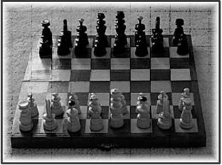
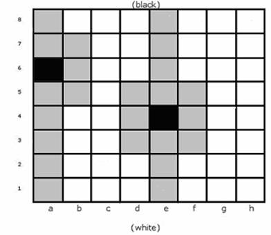

Problem I
Injured Queen Problem
Input: standard input
Output: standard output
Time Limit: 6 seconds
Memory Limit: 32 MB
Chess
is a two-player board game believed to have been played in
In this problem we will talk about injured queens who can move only
like a king in horizontal and diagonal direction from current position but can
reach any row from current position like a normal chess queen. You will have to
find the number of possible arrangements with such injured queens in a
particular (n x n) board (with some
additional constraints), such that no two queens attack each other.
|
 |
|
Fig: Injured Queen at a6 can reach the adjacent grey squares. Queen at e4 can reach adjacent grey squares.
The injured queen positions are black and the reachable places are grey. |
Input
Input file contains several lines of input. Each line expresses a certain board status. The length of these status string is the board dimension n (0<n<=15). The first character of the string denotes the status of first column, the second character of the string denotes the status of the second column and so on. So if the first character of the status string is 2, it means that we are looking for arrangements (no two injured queen attack each other) which has injured queen in column a, row 2. The possible numbers for rows are 1, 2, 3… D, E, F which indicates row 1, 2, 3… 13, 14, 15. If any column contains ‘?’ it means that in that column the injured queen can be in any row. So a status string 1?4??3 means that you are asked to find out total number of possible arrangements in a (6x6) chessboard which has three of its six injured queens at a1, c4 and f3. Also note that there will be no invalid inputs. For example “1?51” is an invalid input because a (4x4) chessboard does not have a fifth row.
Output
For each line of input produce one line of output. This line should contain an integer which indicates the total number of possible arrangements of the corresponding input status string.
Sample Input
??????
???????????????
???8?????
43?????
Sample Output
2642
22696209911206174
2098208
0
(Problem setter: Shahriar
Manzoor, CSE Dept, Southeast University, Dhaka)
“Sometimes we must get hurt in order to grow, we must fail in order to know, sometimes our vision clears only after our eyes are washed away with tears."